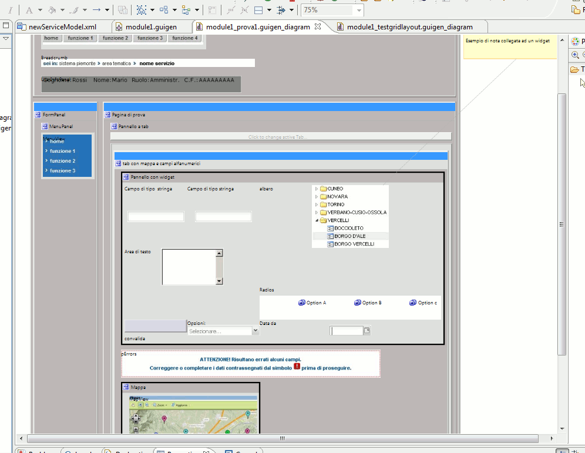

Guida all' utilizzo dell' editor di schermate WYSIWYG (sperimentale)
L' editor/visualizzatore grafico di schermate WYSIWYG (What You See Is What You Get)
è uno strumento che permette di:
- visualizzare in tempo reale nel workbench di modellazione l'aspetto strutturale delle singole
schermate (ContentPanel)
- compiere alcune operazioni di modellazione direttamente sulla vista grafica sulle schermate
Installazione dell'editor di schermate
L'editor di schermate wysiwyg è disponibile come feature accessoria nell'update-site
di guigen. Per la sua installazione è dunque sufficiente selezionare anche la feature
corrispondente in fase di aggiornamento dei plugin guigen.
N.B: questa feature necessita del bundle basato su eclipse Helios
e non funziona con il bundle basato su eclipse Galileo.
Creazione di un diagramma di schermata a partire da un modello esistente
La modalità canonica di utilizzo dell'editor wysiwyg consiste nella creazione dei un
diagramma a partire dal modello di un ContentPanel già esistente.
Per fare ciò è sufficiente eseguire i seguenti passi:
- selezionare nell'albero a sinistra il file contenente il ContentPanel di cui si desidera
creare il diagramma;
- selezionare il menu contestuale "Initialize guigen diagram file"
- scegliere la collocazione e il nome del file che conterrà il diagramma, tenendo conto che esiste
una relazione 1-n tra modello e diagrammi (ovvero è necessario creare un diagramma per ogni ContentPanel e un singolo)
modello contiene in genere vari ContentPanel)
- Navigare nella struttura ad albero del modello e selezionare il nodo relativo al ContentPanel del
quale si desidera inizializzare il diagramma
Al termine delle operazioni appena descritte il sistema genererà un file contenente la struttura
grafica del ContentPanel selezionato. Tale diagramma viene automaticamente sincronizzato con il
modello: in questo modo ogni modifica effettuata sul modello è immediatamente visibile sul diagramma.
Nella figura seguente è mostrato un esempio di diagramma di schermata.

Operazioni di modellazione ammesse direttamente sulla vista grafica
L'utilizzo attualmente previsto per il diagrammatore di schermate è principalmente di
fast preview (editing sulla struttura ad albero e verifica della preview nel diagramma).
E' però possibile effettuare un insieme limitato di operazioni di modellazione agendo
direttamente sul diagramma. In particolare è possibile lanciare dal diagramma tutti i
wizard previsti. Per un elenco dei wizard disponobili è possibile consultare l'apposita
sezione.
Ovviamente l'attivazione dei wizard avviene agendo con il menu contestuale wizards
attivato cliccando con il tasto destro del mouse sull'oggetto per cui tale wizard è previsto.
Esempi:
- per creare la struttura inziale della schermata da un ContentPanel vuoto è sufficiente
attivare il menu wizards cliccando sul canvas 'bianco' del diagramma;
- per creare una struttura di campi relativa ad un ApplicationData di tipo strutturato è
necessario attivare il menu wizards cliccando con il tasto destro dell'area grafica che visualizza
un WidgetsPanel pre-esistente.
Limitazioni conosciute
Attualmente sono conosciute le seguenti limitazioni aggiuntive:
- non è disponibile l'editing delle properties del modello direttamente nel diagrammatore;
è necessario impostare le properties nell'editor ad albero
- In caso di modello incompleto o scorretto per quanto riguarda le porzioni di modello che definiscono
il layout delle schermate il diagamma non sarà visualizzabile. Per evitare questa situazione è
necessario che:
- tutti i pannelli abbiano un layout impostato
- nei casi in cui un pannello contenitore possieda un layout di tipo UDLRC o Grid
tutti gli elementi contenuti possiedano il relativo specificatore (quadrante di collocazione nel caso
UDLRC e coordinate della cella nel caso Grid)
In tali casi è necessario correggere il modello dall'editor gerarchico e riaprire il diagramma.